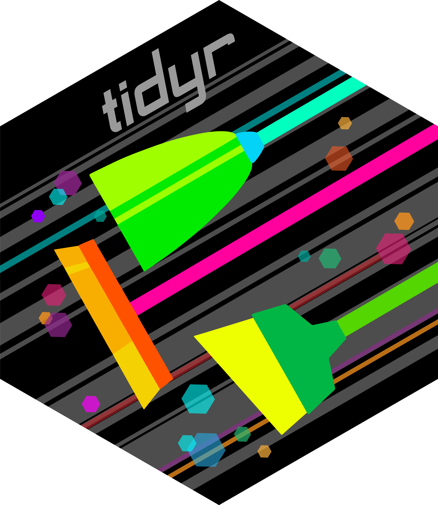
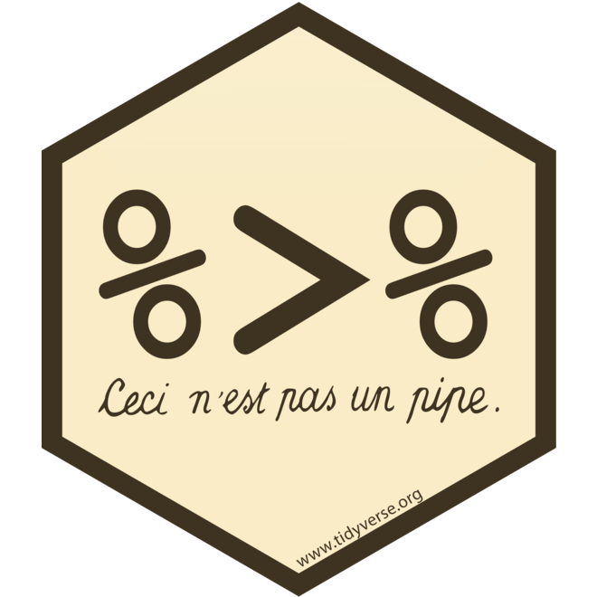

Reshaping data with tidyr#


We have already seen why long form data are important and how to achieve that in base R. The function to tranform data into long form in tidyr is pivot_longer(). First let’s look at some wide data. The code below reads in the mood_data.csv you used for the in-person reshaping exercise we did.
mood <- read.csv(https://raw.githubusercontent.com/PCHN63101-Exploring-Modelling-Data/Tidyverse-Markdown/refs/heads/main/mood_data.csv)
head(mood)
pcp group pre_mood post_mood session
1 P001 Control 5.1 5.3 lab_morning
2 P002 Control 4.7 4.6 lab_afternoon
3 P003 Intervention 5.0 6.4 online_morning
4 P004 Intervention 4.3 5.8 online_afternoon
5 P005 Control 5.4 5.2 online_afternoon
6 P006 Intervention 4.8 6.1 lab_afternoon
As you can see, the time variable that records pre and post is encoded in the names of columns 3 and 4. The mood scores themselves are one variable, but are split across two columns.
Let’s see how pivot_longer() works:
library(tidyr)
long_mood <- pivot_longer(data = mood,
cols = c(pre_mood,post_mood),
names_to = 'time',
values_to = 'mood_score',
names_pattern = "(pre|post)")
head(long_mood)
# A tibble: 6 × 5
pcp group session time mood_score
<chr> <chr> <chr> <chr> <dbl>
1 P001 Control lab_morning pre 5.1
2 P001 Control lab_morning post 5.3
3 P002 Control lab_afternoon pre 4.7
4 P002 Control lab_afternoon post 4.6
5 P003 Intervention online_morning pre 5
6 P003 Intervention online_morning post 6.4
As you can see, pivot_longer() has had the desired effect, and if you look back at the reshape() code you used in the original exercise, you’ll see that pivot_longer() is simpler too.
the
colsargument specifies the columns we want to combine into onethe
names_toargument specifies the name of the column that will now hold the values taken from the column namesthe
values_toargument specifies the name of the column that will now hold data that was previously spread over several columnsthe
names_patternargument tells the function to only keep the ‘pre’ or ‘post’ part of the column names and lose the ‘_mood’ part (this is not strictly necessary, but makes the data cleaner)
Tibbles#
You may have noticed when we used head() on the long_mood data frame the output looked slightly different. The first line says ‘A tibble: 6 x 5’. A tibble as a type of data frame that is produced and preferred by tidyverse functions such as pivot_longer(). To all intents and purposes it is a data frame and you can treat it as such. There are some subtly different behaviours, like when you use head() with a tibble you will see that the types of each column are also displayed.
Separating Columns#
In the in-person session you may remember that after using reshape() we then separated the session column out into location and time of day (TOD) columns. This step is also necessary when ensuring our data is tidy because it violates the ‘one variable: one column’ rule. In this case the session column contains two variables (location and TOD).
tidyr has a function to handle precisely this situation called separate_wider_delim():
long_mood <- separate_wider_delim(long_mood,
cols = session,
delim = '_',
names = c('location','TOD'))
head(long_mood)
# A tibble: 6 × 6
pcp group location TOD time mood_score
<chr> <chr> <chr> <chr> <chr> <dbl>
1 P001 Control lab morning pre 5.1
2 P001 Control lab morning post 5.3
3 P002 Control lab afternoon pre 4.7
4 P002 Control lab afternoon post 4.6
5 P003 Intervention online morning pre 5
6 P003 Intervention online morning post 6.4
That has worked perfectly and is a lot more concise than the base R version. The ‘delim’ in separate_wider_delim() stands for delimiter. In our case the session column had an underscore (_) delimiter between the location and TOD pieces of information. So all we had to do was tell the function what the delimiter was and what we wanted to call the new columns that were created.
The pipe %>%#


When you load any of the tidyverse packages covered this week, a new operator becomes available: the pipe. Base R also includes a pipe, written as |>, but the tidyverse pipe is more commonly used. It is written as %>%.
You do not have to use pipes, but you are likely to encounter them in other people’s code, so it is useful to understand how they work. In essence, a pipe passes an object, usually a data frame, through a series of functions. This is particularly useful when you need to complete several data-cleaning or transformation steps in sequence.
In the code above, we first reshaped the mood data frame from wide to long format, then split the session column into two new variables. The %>% operator allows us to chain these function calls together:
long_mood <- mood %>%
pivot_longer(cols = c(pre_mood,post_mood),
names_to = 'time',
values_to = 'mood_score',
names_pattern = "(pre|post)") %>%
separate_wider_delim(cols = session,
delim = '_',
names = c('location','TOD'))
head(long_mood)
# A tibble: 6 × 6
pcp group location TOD time mood_score
<chr> <chr> <chr> <chr> <chr> <dbl>
1 P001 Control lab morning pre 5.1
2 P001 Control lab morning post 5.3
3 P002 Control lab afternoon pre 4.7
4 P002 Control lab afternoon post 4.6
5 P003 Intervention online morning pre 5
6 P003 Intervention online morning post 6.4
The output is identical to that produced by the two previous sections of code, but here we achieve it in a single command.
First, we pipe the mood data frame into pivot_longer():
mood %>% pivot_longer()
The pipe tells R to use mood as the input to pivot_longer(), so we do not need to explicitly supply its data argument. We then add another pipe after pivot_longer() to pass its output directly into separate_wider_delim().
In other words, the transformed version of mood produced by pivot_longer() becomes the input for separate_wider_delim(). Again, there is no need to specify the data argument manually. After every function in the pipeline has run, the final result is assigned to long_mood.
This example chains only two functions, but a pipeline can contain as many additional steps as needed, for example, further data cleaning, summarising, or plotting functions.
Note
The pipe can make code more efficient, particularly when you have a long series of data-cleaning steps. It avoids the need to repeatedly create and reassign intermediate objects.
However, for beginners, pipelines can sometimes make code harder to read and follow. For that reason, I will not use pipes in my explanations for the remaining sections. I will, however, include examples showing how the same outputs could be achieved using pipes.